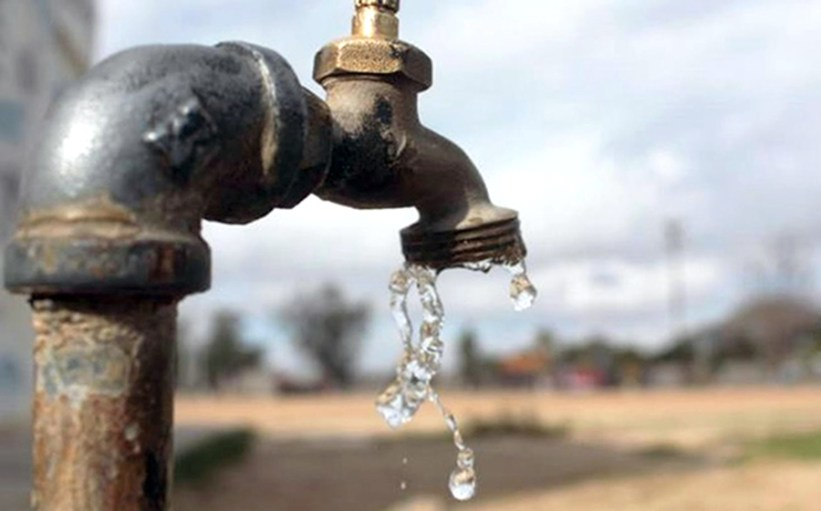

55 municipios registran desabastecimiento de agua potable por sequía
Un estudio realizado por el Laboratorio de Economía de la Educación de la Universidad Javeriana calculó el porcentaje de sedes educativas que se encuentran en manzanas donde el mayor número de viviendas alrededor no cuenta con el servicio de acueducto. Según este informe, al menos el 11% de los colegios del sector oficial en el país quedan ubicados en barrios donde más de la mitad de las viviendas no tiene acueducto. Se encontró, además, una gran brecha porque esto mismo ocurre solo en el 1% de los colegios privados, lo que se convertiría en un serio problema de desigualdad para el regreso a la alternancia y el acceso a agua para poder llevar a cabo el correcto protocolo de lavado de manos en los colegios en medio de la pandemia. El estudio, también encontró que hay solo diferencias entre el sector público y privado, sino también entre zonas rurales y urbanas.

A nivel departamental, se resalta la heterogeneidad de los datos
que existe entre departamentos. Por un lado, en departamentos
como Quindío y Bogotá el porcentaje de sedes oficiales ubicadas
en manzanas donde más de la mitad de las viviendas no tiene
acueducto es nulo; mientras que, por el otro, en Magdalena,
Córdoba, Chocó, San Andrés y Guainía, este porcentaje de sedes
es mayor al 30% SEÑALA EL INFORME DE LA UNIVERSIDAD JAVERIANA.

Esta investigación plantea que para estas sedes que no tienen el servicio de agua, los procesos educativos podrían seguir paralizados en la pandemia, sin retornar a la presencialidad. Lo que, según el estudio, “tiene repercusiones negativas en los estudiantes. Esto sin mencionar las posibles consecuencias de la ausencia de clases sobre el aumento de la deserción, el trabajo y el reclutamiento de menores en grupos delincuenciales”.